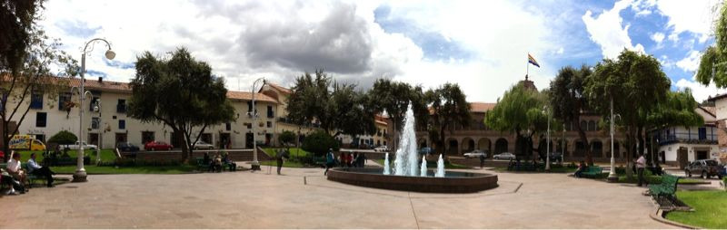

Fri, 08 Oct 2010 21:45:00 · Peru · Cusco · Museums · Parks · Travel · Photography
la vista de plaza regocjico del cusco peru on

La vista de Plaza Regocjico del Cusco, Peru… on one fine afternoon.
In Inca times, Cusco’s main plaza included both what is now the Plaza D’Armas and the smaller Plaza Regocijo, a short block to the southwest.
There are two museums around this plaza that are worth visiting, Museo Histórico Regional (a.k.a. The Casa Garcilaso de la Vega), and Museo de Arte Contemporaneo.